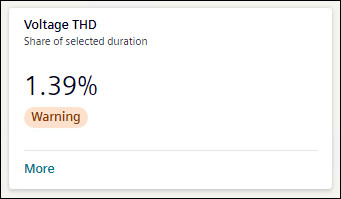
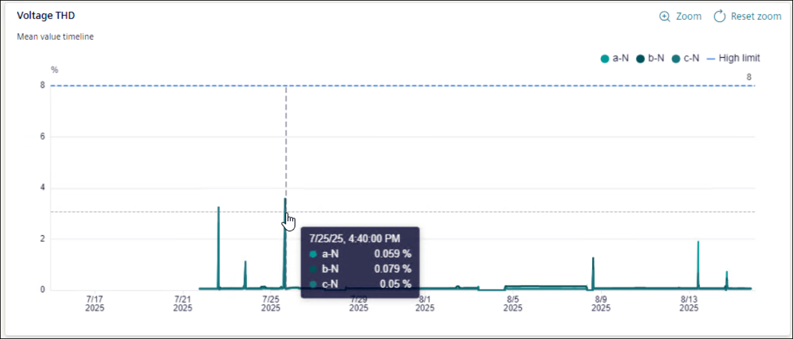

Voltage THD

THD stands for Total Harmonic Distortion. Voltage THD tile shows the percentage of hours of distortion occurred over selected timeline. The tile shows the status of Voltage THD as All Ok, Warning, or Limit violated as per Grid code EN 50160.
To view further details of Voltage THD, click More.

In Voltage THD graph, X-axis shows selected timeline and Y-axis shows percentage of distortion. Hover mouse on the graph to get details.
Graph shows the values of individual phases and selected upper limit.